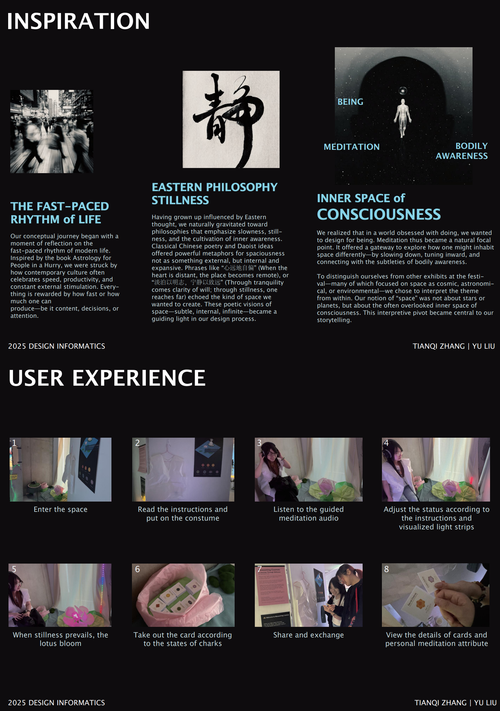

Blossoming Cosmos
An immersive meditation installation that transforms body data into a symbolic journey of inner stillness. Responding to the hyper-connected pace of everyday life, Blossoming Cosmos invites participants to slow down, put on the robe and headphones, place a finger on the pulse sensor, and enter a quiet ritual of embodied awareness. As their pulse softens and their body becomes still, a chakra-coloured light sequence gradually unfolds, guiding attention inward until the lotus slowly blooms.


